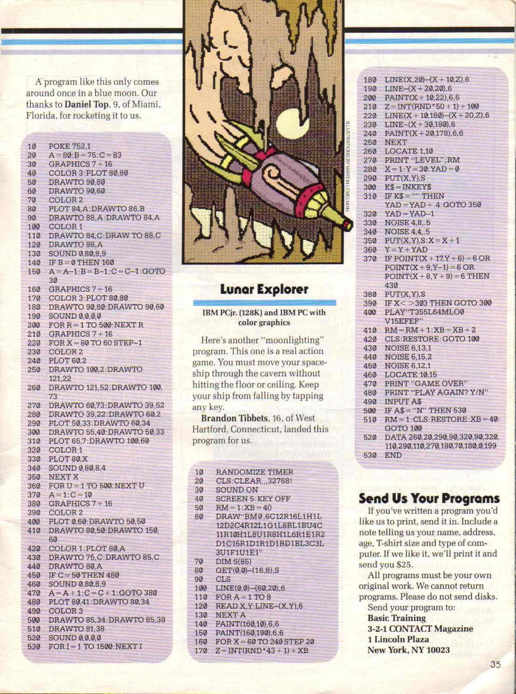
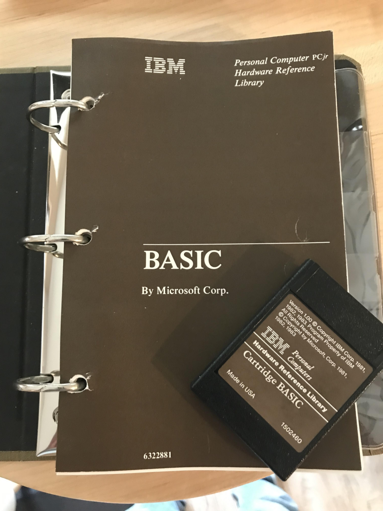
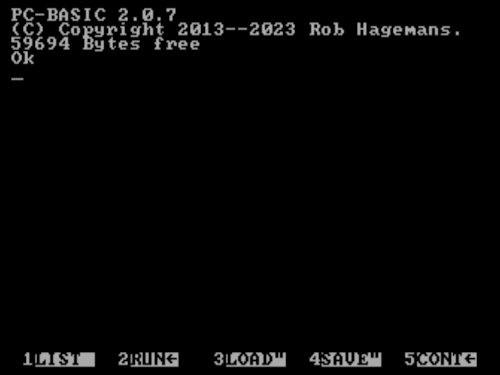
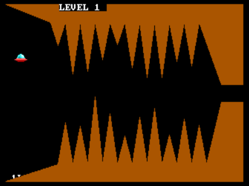
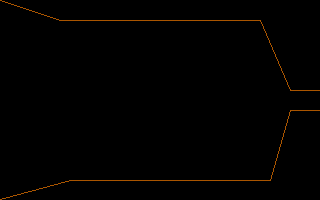
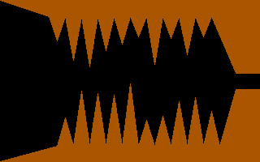
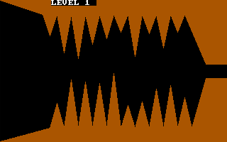
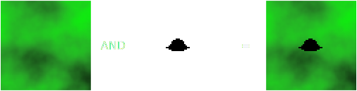
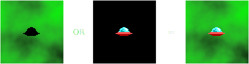

Lunar Explorer
[ About | Introduction | Deep Dive | TypeScript Port | Emulation ]
About
Before Geometry Dash, before Flappy Bird, before the myriad of other single-button diversions, there was Lunar Explorer, a type-in game published in the August 1987 issue of 3-2-1 Contact magazine that was written in the BASIC programming language by Brandon Tibbets, a high school junior from West Hartford, Connecticut. His game challenges the player to maneuver a spacecraft through a cave bristling with sharp rocks by tapping just one button. This article describes how his code works and it provides a TypeScript port playable in the browser.
Introduction
In March 1984, IBM launched the PCjr with the aim of dominating the home computer market just as its predecessor, the PC, had in the business sector three years prior. With that different audience in mind, IBM equipped the PCjr with features predominately intended for gaming, including enhanced CGA graphics modes, a multichannel sound chip, two joystick ports, a port for a mouse or a light pen, a pair of cartridge slots, and an IR receiver for a wireless keyboard. Despite those features, the PCjr struggled to establish a market presence, leading IBM to discontinue the machine in March 1985.
Kudos to 3-2-1 Contact magazine for publishing a game for the diminishing PCjr user base more than two years after IBM halted the machine’s production. As shown below, the game’s source is so short that it shares page space with another program. Coincidentally, both span exactly fifty-three lines.

Lunar Explorer is listed below an illustration of a rocket ship blasting through a cave, an image designed to entice the reader to type in the code. Without a screenshot of actual gameplay, the reader is left in suspense until completing that grueling process.
The PCjr originally sold with either 64 or 128 KB of RAM. Although the magazine asserts the game is compatible with both a 128 KB PCjr and a PC equipped with a CGA card, the program employs the superior graphics and sound capabilities exclusive to the PCjr, and it uses commands only found in Cartridge BASIC, a BASIC dialect unique to the PCjr.

Deep Dive
The first line seeds the random number generator with the number of seconds elapsed since midnight or system reset:
10 RANDOMIZE TIMER
That statement only works when Cartridge BASIC is launched from DOS (by executing BASICA) because it depends on the DOS API (software interrupt 21h, service 2Ch). Additionally, since the PCjr lacks a CMOS battery, TIMER provides seconds from midnight only if the user manually adjusted the clock, a process routinely done at power on.
The PCjr does not have dedicated video RAM. Instead, a program reserves a page of the first 128 KB of primary memory to serve as the buffer that backs the video display. By default, Cartridge BASIC allocates a 16 KB page at the top of memory. But Lunar Explorer uses an enhanced CGA mode that requires 32 KB. Before it enters that mode, it clears the screen with CLS and then it expands the video page to 32 KB with the CLEAR command:
20 CLS:CLEAR ,,,32768!
The command is called “CLEAR” because it also resets the reserved page to all zeros. The bang at the end is unnecessary. It indicates the numeric literal is a single-precision floating-point constant. But the interpreter automatically deduces that since the value exceeds the positive range of a signed integer by one.
The PCjr monitor contains an amplified speaker that supplements the case speaker. The program enables the monitor speaker with the SOUND command:
30 SOUND ON
Next, the program executes a SCREEN statement to enter “medium resolution graphics mode”, the 320×200 pixels CGA mode augmented to sixteen colors, rather than the traditional black, cyan, magenta, and white:
40 SCREEN 5:KEY OFF
At one nibble per pixel, the video page must be at least 320 × 200 / 2 = 32000 bytes. The program requests 32768 bytes because the system requires video page sizes to be powers of two. The extra 768 bytes do not back visible pixels.
Since the display aspect ratio is 4:3, the pixel aspect ratio is (4 / 320) : (3 / 200) = 5:6. Meaning, the pixels are rectangular; they are 20% taller than they are wide. For authenticity, the TypeScript port renders pixels with those proportions. On a widescreen display, it fills the unused space around the simulated screen with a shade of light gray that matches the color of the PCjr monitor bezel.
The BASIC code editor displays its soft key mapping at the bottom of the screen, even during program execution:

The following screenshot shows what happens when the KEY OFF statement, which hides that text, is removed (see lower left).

On the subsequent line, the program declares two variables:
50 RM=1:XB=40
RM stores the level number. Its name is likely an abbreviation for “room”.
XB is the minimum height of the cave’s randomly generated stalactites, a value that increases with each level. The meaning behind its name remains unknown.
After that, the program renders the player’s ship in the upper-left corner of the screen via a DRAW statement:
60 DRAW"BM0,6C12R16L1H1L12D2C4R12L1G1L8BL1BU4C11R10H1L8U1R8H1L6R1E1R2D1C15R1D1R1D1BD1BL3C3L3U1F1U1E1"
DRAW executes a “graphics definition language” program, a sequence of one or two letter commands, each followed by one or two numerical parameters, that directs a single-pixel cursor to plot a colored path. The following commands move the cursor n pixels along an axis-aligned line:
Un- Up
Dn- Down
Ln- Left
Rn- Right
The following commands move the cursor n pixels along a 45° diagonal line:
En- Up-right
Fn- Down-right
Gn- Down-left
Hn- Up-left
C n sets the cursor color, M x,y moves the cursor to the specified coordinates, and the prefix B means move the cursor without plotting. There are additional commands, but Lunar Explorer’s single DRAW statement uses only those described here.
This is result:
Next, the program stores the rendered graphic as a sprite:
70 DIM S(85) 80 GET(0,0)-(16,8),S
The GET statement treats the provided array as a string of bytes. It packs the sprite’s width into the first two bytes, and the sprite’s height into the next two bytes. Then it separately packs each row of pixel data into the remaining bytes. In this case, the width is 16 − 0 + 1 = 17 pixels and the height is 8 − 0 + 1 = 9 pixels. At one nibble per pixel and two nibbles per byte, each row requires ⌈17 / 2⌉ = 9 bytes. In total, the sprite consumes 2 + 2 + (9 bytes/row) × (9 rows) = 85 bytes.
At first glance, that seems to explain the argument provided to the DIM statement. But, by default, the DIM statement allocates an array of single-precision floating-point numbers, where each element occupies four bytes. Consequently, the sprite needs an array of length ⌈85 / 4⌉ = 22 elements.
Not only that, the argument provided to the DIM statement is not the array length. It is the maximum index of an array indexed from zero. Meaning, to minimize the sprite’s memory footprint, line 70 should be:
70 DIM S(21)
Of course, the game still works when the sprite’s array is larger than it needs to be.
After capturing the ship sprite, the program clears the screen, and it plots the outline of the cave ceiling and floor:
90 CLS 100 LINE(0,0)-(60,20),6 110 FOR A = 1 TO 8 120 READ X,Y:LINE-(X,Y),6 130 NEXT A ... 520 DATA 260,20,290,90,320,90,320,110,290,110,270,180,70,180,0,199
Cartridge BASIC does not provide a way to reposition the single-pixel cursor without drawing. Instead, line 100 renders the initial segment in color 6 (brown). From there, a for-loop reads coordinate pairs from a DATA statement, and it uses the line-to variant of the LINE statement to successively extend the path, again in color 6. Notably, two endpoints are one pixel beyond the screen’s right edge, which breaks the ceiling and floor into disjoint regions:

Next, the program flood fills the ceiling and floor via PAINT statements:
140 PAINT(160,10),6,6 150 PAINT(160,190),6,6
Regarding the arguments, the first 6 is the fill color, and the second 6 is color of the boundary to contain the flood. Both flood seed coordinates are within the screen’s central column. The ceiling seed is ten rows from the top, and the floor seed is ten rows from the bottom.
After painting the ceiling and floor, the program generates twenty random speleothems:
160 FOR X=60 TO 240 STEP 20 170 Z=INT(RND*43+1)+XB 180 LINE(X,20)-(X+10,Z),6 190 LINE-(X+20,20),6 200 PAINT(X+10,22),6,6 210 Z=INT(RND*50+1)+100 220 LINE(X+10,180)-(X+20,Z),6 230 LINE-(X+30,180),6 240 PAINT(X+20,178),6,6 250 NEXT
For each speleothem, the program plots and fills a triangular shape made from two line segments extending from the ceiling or floor that meet at common point. As shown below, the program staggers the stalactites and stalagmites, unlike real speleothems, which form in aligned pairs.

As previously mentioned, XB is the minimum stalactite height, a value that increases to make each level more difficult than the last. While the minimum stalagmite height remains constant, the growing stalactites will eventually manifest a kill screen. The specific level at which this occurs depends on the random number generator.
Next, the program displays the level number at the top of the screen:
260 LOCATE 1,10 270 PRINT "LEVEL";RM
For a true-to-original experience, the TypeScript port displays text using the 8×8 pixel glyphs of the monospaced CGA font.

After that, the program initializes the variables that keep track of the ship’s position and vertical velocity:
280 X=1:Y=30:YAD=0
Next, the program draws the ship sprite at its initial position:
290 PUT(X,Y),S
The PUT statement accepts an optional parameter that specifies how the sprite combines with the pixels of the video page. Since only three arguments were provided on line 290, PUT defaults to bitwise XOR. But it can also bitwise OR, bitwise AND, transfer without blending, or invert and transfer without blending. Since the background is color 0 (black), bitwise XORing the pixels does not modify the sprite’s colors.
The black pixels surrounding the ship, as shown in the magnified sprite below, are not transparent. However, when the sprite is rendered, those pixels become indistinguishable from those of the black background.
Several graphical effects can be achieved with PUT’s optional parameter. For example, to simulate transparency, a mask sprite is created with black pixels for the visible regions (all bits clear) and white pixels for the transparent regions (all bits set). Bitwise ANDing a background with the mask casts a silhouette on the background:

Then the original sprite, with transparent regions colored black, is bitwise ORed over the silhouette:

Lunar Explorer does not employ that technique. But it does take advance of the default bitwise XOR operation, as explained later.
After all that setup, the program enters the game loop:
300 K$=INKEY$ 310 IF K$="" THEN YAD=YAD+.4:GOTO 350 320 YAD=YAD-1 330 NOISE 4,8,.5 340 NOISE 4,4,.5 350 PUT(X,Y),S:X=X+1 360 Y=Y+YAD 370 IF POINT(X+17,Y+6)=6 OR POINT(X+9,Y-1)=6 OR POINT(X+8,Y+9)=6 THEN 430 380 PUT(X,Y),S 390 IF X<>303 THEN GOTO 300
Reading the INKEY$ variable dequeues and returns one character from the keyboard buffer or empty string when the keyboard buffer is clear. This polling technique is significantly different from input handling in most modern programming languages, which are event-based due to the many levels of abstraction that evolved between peripheral hardware and software since the days of the PCjr.
The TypeScript port responds to mouse clicks and touch taps in addition to key presses.
If there is no input, the program increments the ship’s vertical velocity by 0.4 to simulate acceleration due to gravity. Otherwise, the program decrements the ship’s vertical velocity by one and it emits a sound effect, via a pair of NOISE statements, suggesting a momentary release of thrust.
The NOISE statement invokes the noise generator of the Texas Instruments SN76496 chip. The first parameter asserts the generation frequency and the noise type: periodic or white. The argument 4 means white noise at the NTSC colorburst frequency (315/88 MHz) divided by 512. The second parameter is the volume (0–15). The third parameter is the duration specified in system timer ticks at the default frequency of the Programmable Interval Timer (18.2 ticks/sec), which gets delivered to the interpreter by a handler hooked to BIOS interrupt 8h. The value 0.5 gets rounded to one tick. In summary, that pair of NOISE statements produces a high-pitched white noise that lasts about a tenth of a second with decreasing volume.
The TypeScript port plays sound effects sampled from PC-BASIC emulating the game (more on this later).
Before the program updates the ship’s coordinates, line 350 renders the ship sprite at its current location. This erases the ship because twice bitwise XORing a sprite pixel with a background pixel restores the original background pixel.
Next, the program increments the ship’s horizontal coordinate by one, a constant horizontal velocity. And it increments the ship’s vertical coordinate by YAD, the varying vertical velocity.
After that, line 370 probes the three points about the ship indicated by yellow pixels in the following image.
If any of those points are brown, then the ship collided with the cave surface and the program jumps out of the game loop. Otherwise, the program renders the ship sprite at the new location.
Since the program repeatedly erases and draws the sprite, the ship flickers on a real PCjr. The effect is less noticeable in PC-BASIC (discussed below), and it is completely absent in the TypeScript port because the port synchronizes frame rendering with the display's refresh rate.
The final line of the game loop continues the loop if the player has yet to reach the right side of the screen. Else, the player is rewarded for passing the level with a sound effect provided by a PLAY statement:
400 PLAY"T255L64MLO0V15EFEF"
PLAY expects a “tune definition language” program, a sequence of single and double letter commands and numerical arguments. Here are the commands used on line 400:
Tn- Tempo in quarter notes per minute (32–255)
Ln- Note length's unit fraction's denominator (1–64)
ML- Music legato (notes play for the full period established by
L) On- Octave (0–6)
Vn- Volume (0–15)
E and F are the musical notes. The result is a short wavering beep.
After the congratulatory beep, the program increments the level number by one and the stalactite height by two:
410 RM=RM+1:XB=XB+2
Then, it clears screen, it resets the DATA statement’s read index with RESTORE, and it jumps back to line 100 to draw a new cave:
420 CLS:RESTORE:GOTO 100
The subsequent code executes when the ship crashes:
430 NOISE 6,13,1 440 NOISE 6,15,2 450 NOISE 6,12,1 460 LOCATE 10,15 470 PRINT "GAME OVER" 480 PRINT "PLAY AGAIN? Y/N" 490 INPUT A$ 500 IF A$="N" THEN 530 510 RM=1:CLS:RESTORE:XB=40:GOTO 100
The crash sound effect is produced by three NOISE statements. The argument 6 indicates white noise at the NTSC colorburst frequency (315/88 MHz) divided by 2048. Collectively, the statements produce low-pitched white noise that rises and then diminishes in volume for about a sixth of a second.
Following the sound effect, the program prints “GAME OVER” in the center of the screen and a prompt inquiring if the user wants to play again. If the user types “N”, the program jumps to its final line, which terminates it:
530 END
The END statement does not restore the soft key text at the bottom of the screen, nor does it switch back to the original video mode. The program leaves it to the user to issue KEY ON and SCREEN mode.
If the user types anything other than “N”, the program resets the level number and the stalactite height before generating a new cave.
Line 520, shown earlier, contains the DATA statement.
TypeScript Port
As revealed below, the TypeScript port implements functions that reproduce the effects of the BASIC statements. They render to a 320×200 pixel back buffer that is subsequently transferred to the display. The port leverages Bresenham's line algorithm for the equivalent of the LINE statement and the flood fill algorithm for equivalent of the PAINT statement. The analog of the DRAW statement contains a “graphics definition language” interpreter.
cls(); draw('BM0,6C12R16L1H1L12D2C4R12L1G1L8BL1BU4C11R10H1L8U1R8H1L6R1E1R2D1C15R1D1R1D1BD1BL3C3L3U1F1U1E1'); get(0, 0, 16, 8).then(...); ... cls(); // Draw cave floor and ceiling. line(0, 0, 60, 20, 6); for (let i = 0; i < caveXYs.length; i += 2) { line(caveXYs[i], caveXYs[i + 1], Color.BROWN); } paint(160, 10, Color.BROWN, Color.BROWN); paint(160, 190, Color.BROWN, Color.BROWN); for (let x = 60; x <= 240; x += 20) { // Draw stalactite with random height based on the level. let y = Math.floor(Math.random() * 43 + 1) + minStalactiteHeight; line(x, 20, x + 10, y, Color.BROWN); line(x + 20, 20, Color.BROWN); paint(x + 10, 22, Color.BROWN, Color.BROWN); // Draw stalagmite with random height based on the level. y = Math.floor(Math.random() * 50 + 1) + 100; line(x + 10, 180, x + 20, y, Color.BROWN); line(x + 30, 180, Color.BROWN); paint(x + 20, 178, Color.BROWN, Color.BROWN); } locate(1, 10); print(`LEVEL ${level} `); ... if (tapPressed) { tapPressed = false; --shipVy; playSoundEffect('sfx/boost.mp3'); } else { shipVy += 0.4; } shipX++; shipY += shipVy; if (point(shipX + 17, shipY + 6) === Color.BROWN || point(shipX + 9, shipY - 1) === Color.BROWN || point(shipX + 8, shipY + 9) === Color.BROWN) { locate(10, 15); print('GAME OVER'); playSoundEffect('sfx/crash.mp3'); ... } else if (shipX >= 303) { ++level; minStalactiteHeight += 2; playSoundEffect('sfx/success.mp3'); ... }
Emulation
The easiest way to run the original source on a modern machine is to use PC-BASIC, a free, cross-platform, open-source interpreter for several BASIC dialects and graphical configurations of early PC compatibles. It can be downloaded here.
To emulate a PCjr with Cartridge BASIC, launch it with the following command:
pcbasic --preset=pcjr
Copy the code from here and paste it into PC-BASIC with F11+V. Then type RUN and press Enter to launch the game.
Since PC-BASIC interprets code much faster than a real PCjr, a delay was inserted into the game loop:
385 T = TIMER:WHILE T = TIMER:WEND:T = TIMER:WHILE T = TIMER:WEND
That line uses the aforementioned TIMER variable, which updates approximately every 55 ms. The delay slows the game to about 9 frames/sec. The TypeScript port is fixed at 10 frames/sec. At the time of this writing, the frame rate at which the game runs on an actual PCjr remains unknown.
© 2024 meatfighter.com |